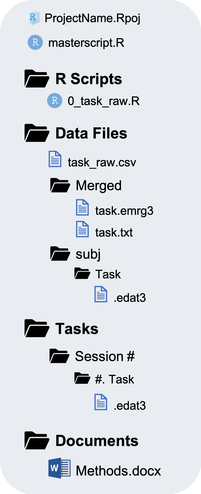

Chapter 9 R Script Templates

One of the nice features of using R scripts to analyze your data is that you can use a lot of the same code from one step or one project to another.
For each of these steps, the script organization from one task, analyis, or project to the next will be more or less the same. This means we can take advantage of using R script templates. Using R Script templates will not just save time but help you stay organized and use reproducibility practices talked about in the previous Section
9.1 Download Templates
I have created some templates you can easily download using a single R function workflow::template()
9.1.1 Install workflow package
If you have not done so already, install the workflow package
There are different types of templates you can download using workflow::template(). You can always use ?workflow::template to see help documentation.
9.2 Data Preparation

Data Preparation will occur in a Central Repository (Data Collection), separately from Data Analysis. It will have its own .RProj and mastercript.R files.
The main step during data preparation is converting messy raw data files to tidy raw data files. In the diagram below, this step corresponds to the 0_task_raw.R script file.

The rawscript filenames are prefixed with 0_ because this is a preliminary stage and are suffixed with **_raw.R** because they create a tidy raw data file called task_raw.csv.
9.2.1 messy-to-tidy script
If you want to download a template script for the step of converting messy raw data files to tidy raw data files during data preparation you can simply specify:
Let us take a look at what the rawscript template looks like
#### Set up ####
## Load packages
library(here)
library(readr)
library(dplyr)
## Set Import/Output Directories
import.dir <- "Data Files/Merged"
output.dir <- "Data Files"
## Set Import/Output Filenames
task <- "taskname"
import.file <- paste(task, ".txt", sep = "")
output.file <- paste(task, "raw.csv", sep = "_")
################
#### Import ####
import <- read_delim(here(import.dir, import.file),
"\t", escape_double = FALSE, trim_ws = TRUE)
################
#### Tidy raw data ####
data_raw <- import %>%
filter() %>%
rename() %>%
mutate() %>%
select()
#######################
#### Output ####
write_csv(data_raw, here(output.dir, output.file))
################
rm(list=ls())There are 4 main blocks of R code:
Set up the script
- Load required packages using
library() - Set the import/output directories and filenames
Doing these steps at the top of the script makes it obvious, without having to read the rest of the script, what packages the script will require and what data file it is importing and outputing.
In the diagram above you can see the “messy” raw data files (“task.txt”) are in “Data Files/Merged”. This script will output a “tidy” raw data file to “Data Files” called “task_raw.csv”
- Load required packages using
Import a data file using
read_delim()from thereadrpackageTidy the imported dataframe using
dplyrfunctions, such asfilter(),rename(),mutate(),case_when(), andselect()Output a “tidy” data file using
write_csv()fromreadr
Last, remove all objects from the enivornment with rm(list=ls()).
To me this template is beautiful. The only thing you need to change is
task <- "taskname"to the name of the task used in the filenameFill in what happens in the Tidy raw data block.
The rest can LITERALLY stay the same. How easy!
9.2.2 masterscript: Data Preparation
In the EngleLab, we often have up to 40 tasks for a single Data Collection study. When you have a lot of R Scripts it is quite tedious to open, Source, and exit, each R script one at a time. The masterscript allows you to Source each of your scripts with a line of code using source().
The source() function is a way to execute all the lines of code in a script file. Rather than having to manually open each script file and sourcing it from there you can control your entire data processing workflow from the masterscript using source(). The argument echo = TRUE will print the results of the script to the console that way you can still see what the script is doing.
This allows you to run each script from the masterscript and control the order in which you run them. For Data Preparation the order does not really matter, but once you get to Data Analysis the order is crucial.
The masterscript template for Data Preparation can be downloaded with:
This masterscript is simple:
## Data Preparation for StudyName
#############################################
#------ 0. "messy" to "tidy" raw data ------#
#############################################
library(here)
source(here("R Scripts", "0_taskname_raw.R"), echo=TRUE)
rm(list=ls())
#############################################9.3 Data Analysis

Data Analysis will occur in it’s own repository separate from the Central Repository (Data Collection) and separate from Data Preparation. The task_raw.csv files created during Data Preparation will be copy and pasted over to Data Files/Raw Data in the Data Analysis repository.

Typically there are at least two steps that need to be taken in order to create a final data file that is ready for statistical analysis.
Clean and Score the data from each task by aggregating performance over trials removing any outlier trials or problematic/poor performing subjects.
Merge the scored data file from each task into one final data file (this step is more specific to correlational studies but may also apply to experimental studies).
There may be some additional steps that are required but these are the basic ones. In the diagram above these two steps correspond to the 1_task_score.R and 2_merge.R script files. They are numbered in the order the scripts have to be ran. This also helps organize the files on your computer. The suffix of the scripts **_score.R** and **_merge.R** describes what the script does.
9.3.1 clean and score script
If you want to download a template script for the step of cleaning and scoring a raw data file you can type in the console:
Let us take a look at what the scorescript template looks like
#### Setup ####
## Load Packages
library(here)
library(readr)
library(dplyr)
## Set Import/Output Directories
import.dir <- "Data Files/Raw Data"
output.dir <- "Data Files/Scored Data"
## Set Import/Output Filenames
task <- "taskname"
import.file <- paste(task, "raw.csv", sep = "_")
output.file <- paste(task, "Scores.csv", sep = "_")
## Set Data Cleaning Params
###############
#### Import ####
import <- read_csv(here(import.dir, import.file))
################
#### Data Cleaning and Scoring ####
data <- import %>%
filter() %>%
group_by() %>%
summarise()
###################################
#### Output ####
write_csv(data, here(output.dir, output.file))
################
rm(list=ls())Like the rawscript, there are 4 main blocks of R code:
Set up the script
- Load required packages using
library() - Set the import/output directories and filenames
- Set Data Cleaning Params
In the diagram above you can see the “tidy” raw data files (“task_raw.csv”) are in “Data Files/Raw Data”. This script will output a data file with “Scores” on the task to “Data Files/Scored Data” called “task_Scores.csv”
You can also set some optional data cleaning parameters at the top of the script. This will be explained in more detail later.
- Load required packages using
Import a data file using
read_csv()from thereadrpackageClean and Score the imported dataframe using
dplyrfunctions, such asfilter(),mutate(),group_by(), andsummarise()Output a data file with task Scores using
write_csv()fromreadr
Last, remove all objects from the enivornment with rm(list=ls()).
The parts you may need to change are:
What packages are loaded,
library()task <- “taskname”
Optional data cleaning paramaters in the “Set Data Cleaning Params” section
The “Data Cleaning and Scoring” block
9.3.2 merge script
To download a template script to merge several **_Scores.csv** files together:
The template looks like this:
#### Set up ####
## Load packages
library(here)
library(datawrangling) # to use files_join() and trim()
library(dplyr)
## Set import/output directories
import.dir <- "Data Files/Scored Data"
output.dir <- "Data Files"
################
#### Import Files ####
import <- files_join(here(import.dir), pattern = "Scores", id = "Subject")
######################
#### Select only important variables and trim outlier scores ####
data_merge <- import %>%
select() %>%
trim(variables = "all", cutoff = 3.5, id = "Subject")
## Create list of final subjects
subj.list <- select(data_merge, Subject)
#################################################################
#### Output ####
write_csv(data_merge, here(output.dir, "name_of_datafile.csv"))
write_csv(subj.list, here(output.dir, "subjlist_final.csv"))
################
rm(list=ls())Again, this template script has 4 main blocks:
Set up the script
- Load required packages using
library() - Set the import/output directories
Notice that in the setup section, the import and output filenames are not specified. The import filenames are not specified because 1) we may need to import quite a lot of **_Scores.csv** files and 2) I created a function to do this without having to specify each individual filename. You could add a section to include an output filename if you want.
- Load required packages using
Import the data files with task scores.
You can merge multiple files with the same rows (Subjects) and different columns (variables or task scores) using
datawrangling::files_join(). This is be explained in more detail later on.Select and trim only relevant variables.
It is likely that the individual task_Scores.csv files will have way more columns of scores than you are interested in. You may also want to trim outlier scores with
datawrangling::trim(), which will be explained in more detail later. Also, more optional is to create a dataframe with a list of subjects that have made it through all the processing stages.Output a final data file that is ready for statistical analysis with
write_csv()fromreadrOptional to also create a file with a list of all subjects that have made it through all these stages of processing.
Last, remove all objects from the enivornment with rm(list=ls()).
9.3.3 masterscript: Data Analysis
The masterscript template for Data Analysis can be downloaded with:
## Data Analysis for StudyName
#################################################
#------ 1. "tidy" raw data to Scored data ------#
#################################################
library(here)
source(here("R Scripts", "1_taskname_score.R"), echo=TRUE)
rm(list=ls())
#############################################################
#------ 2. Create Final Merged Data File for Analysis ------#
#############################################################
library(here)
source(here("R Scripts", "2_merge.R"), echo=TRUE)
rm(list=ls())
###############################
#------ 3. Data Analysis ------#
###############################
library(here)
library(markdown)
render(here("R Scripts", "3_MainAnalyses.Rmd"),
output_dir = here("Results"), output_file = "MainAnalyses.html",
params = list(data = here("Data Files", "Name_of_datafile.csv")))
rm(list=ls())You can see that it is organized in the order in which the scripts need to be ran and how the scripts are named.
The render(), function seen in the “3. Data Analysis” section, is how to knit an RMarkdown document. We will see later that this creates a flexible way to knit RMarkdown documents because you can specify the output filename and location, as well as certain parameters for what data set to import or analysis parameters to set. render() comes from the package rmarkdown which is why it is loaded at the top of the data analysis section.
Finally, let’s get start working with an example data set